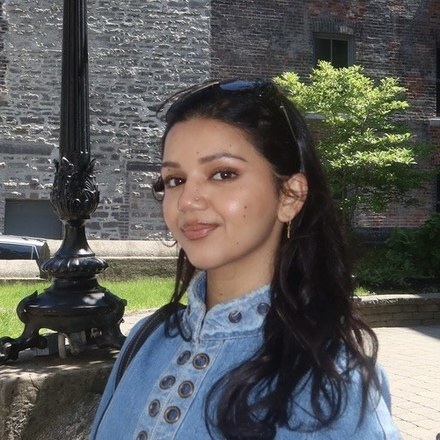

I am a social science researcher, designer, and strategist based in Columbus, Ohio, working at the intersection of social systems, technology, and culture. For the past seven years, my work has examined how marginalized communities navigate and shape digital infrastructure -- focusing on mobility, identity, and data practices. I hold a Master of Arts in Urban, Regional, and Global Geography from The Ohio State University, a Bachelor of Arts from Denison University, and technical training in full-stack JavaScript.
I work with nonprofits and small businesses to translate complex sociotechnical research into intuitive digital experiences and sustainable strategies. If you're interested in working together, please reach out.
Technical
JavaScript · HTML · CSS · Figma · UI/UX · WordPress · Wix · Canva
Research
Qualitative & Quantitative Research · Ethnography · Digital Methods · Critical Discourse Analysis · Survey Design · Oral History · IRB Protocols
Programs & Communication
Program & Curriculum Design · Workshop Facilitation · Social Media Strategy · Email Marketing · Digital Archiving · Budget Management
Languages
English · Nepali
South Asian American Digital Archive (SAADA), digital exhibit
Interviews: Rojika Sharma; Artwork: Bikash Rai
"Digital Placemaking: Cultivating Belonging by and for Refugees in Central Ohio"
M.A. thesis, The Ohio State University
"Digital Placemaking of Refugees in Ohio"
ELDAAG, East Lake Division of the American Association of Geographers
"Mapping South Asian Diaspora Aunties on Media"
South Asian Studies Initiative Brown Bag Series · The Ohio State University
"Memefication of South Asian Aunties"
GLCA Women's, Gender, and Sexuality Studies Conference · Kalamazoo College
Harvard Kennedy Public Policy and Leadership Conference
Harvard Kennedy School
"Mapping Multiplicities As Scholar-Activists & Artists in Ohio"
With Suparna Bhaskaran, Rebecca Nelson, and Emily Hanako Momohara
bell hooks Symposium, Berea College (2023) · Asian American Studies Conference, Michigan State (2023) · Association for Ethnic Studies Conference, Bowling Green State (2021)